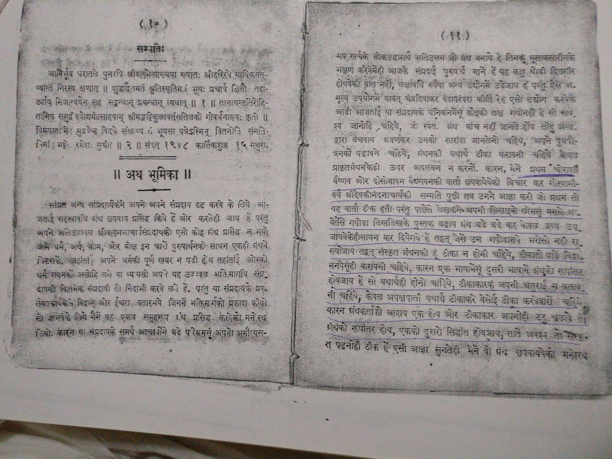

Vaarta Sahitya
WARNING!! Before relying on the Vaarta Literature, please note that the source of these vaarta may not be reliable since the Author may have tampered with the originality. Thus, readers are advised to believe in only those vaarta prasangs that are NOT in contradiction with the Shodasha Granthas, Nibandha Granthas and similar other granthas directly authored by the Acharya Shri Vallabhacharya, Sri Gopinathji and Sri Vitthalnathji. The same has been mentioned by Goswami Sri Devakinandanji (Son of Sri Govindlalji) in his message to Vaishnavas on the publication of Second Edition of "BruhatstotraSaritsagar" Granthas in V.S. 1948 published by Sheth Govardhan das. Please see messsage in the below picture taken from the granth itself -

| Title | Author | Language | Description | e-book |
|---|---|---|---|---|
| Shreenathji's Prakatya Vaarta | Shree Hariraiji | Braj | This is the Shreenathji's prakatya vaarta written by Shree Hariraiji and published by Nathdwaradhish Go. 108 Shree Damodarlalji Maharajshri | Read |
| Shree Govardhannathji's Prakatya Vaarta | Shree Hariraiji | Braj | Tribhuvandas Pitambardas Shah - Nadiad Published by Somalal Mangaldas | Read |
| Shreenathji's Prakatya Vaarta | Shree Hariraiji | Braj | Lallubhai Chaganlal Desai - Ahmedabad | Read |
| 84 Vaishnav vaarta | Shree Gokulnathji | Braj | Lallubhai Chaganlal Desai - Ahmedabad | Read |
| Nij - Gharu Vaarta of Shree Mahaprabhuji | Shree Gokulnathji | Braj | Vaarta | Read |
| AshtaSakha Ki Vaarta (Teen Janma Ki Leela bhavna) | Shree Hariraiji | Braj | Published by Dwarkadas Parikh | Read |
| Vaarta Sahitya Mimamsa | Dwarkadas Parikh | Gujarati | Dwarkadas Parikh | Read |
| 252 Vaishnavas Vaarta - Part -1 | Dwarkadas Parikh | Braj | Published by Shree Vrajbhushanlalji- Kankroli | Read |
| 252 Vaishnavas Vaarta - Part -2 | Dwarkadas Parikh | Braj | Published by Shree Vrajbhushanlalji- Kankroli | Read |
| 252 Vaishnavas Vaarta - Part -3 | Dwarkadas Parikh | Braj | Published by Shree Vrajbhushanlalji- Kankroli | Read |
| Prachin Vaarta Rahasya - Part 1 | Dwarkadas Parikh | Braj | Kankroli Vidhya Vibhag | Read |
| Prachin Vaarta Rahasya - Part 2 | Dwarkadas Parikh | Braj | Kankroli Vidhya Vibhag | Read |
| Prachin Vaarta Rahasya - Part 3 | Dwarkadas Parikh | Braj | Kankroli Vidhya Vibhag | Read |
| Kankroli ka Itihaas | Kanthamani Shastri | Hindi | Kankroli Vidhya Vibhag | Read |
| Kumbhandas | Go. Vrajbhushanlalji, Kanthamani Shastri, Gokulanand sharma | Hindi | Kankroli Vidhya Vibhag | Read |
| Kankroli Digdarshan | Kanthamani Shastri | Hindi | Published by Vidhya Vibaag Kankroli | Read |
| Mathuradhish Prabhunu Mangal Prayan | Vallabhdas Shukla | Gujarati | Read |
Disclaimer: If anyone has any type of copyright issues in publishing the granthas in electronic format in this website, please email us at admin@pushtisahitya.org. This portal is NOT the official website of Pushti Sampraday.